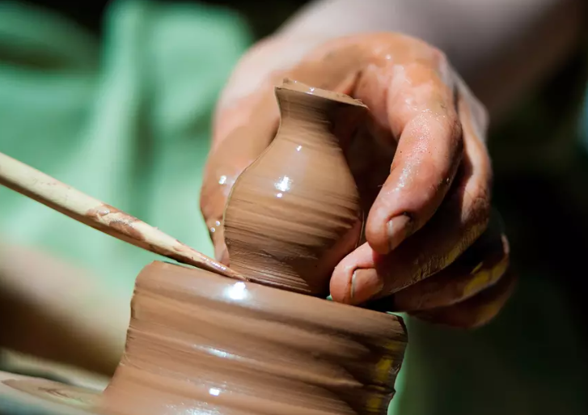

Learning Tips and Videos

Tips for Working with Clay
Working with clay is a rewarding and therapeutic experience, but it requires patience and attention to detail. Here are some essential tips for working with clay:
- Keep your clay moist – Clay can dry out quickly, so always keep it covered with a damp cloth or in an airtight container when not in use to maintain its workability.
- Use the right tools – Investing in the right pottery tools, such as rib tools, wire cutters, and carving tools, will make shaping and detailing your pieces much easier.
- Don’t rush – Whether you’re handbuilding or using the wheel, take your time to shape your clay. Rushing can lead to cracks or uneven pieces. Work slowly, and remember that clay can always be smoothed out or adjusted if needed.
- Score and slip – When attaching two pieces of clay, always score (scratch) the surfaces and apply slip (a watery clay mixture) to ensure a strong bond before joining them together.

Tips for Working with Glaze
Glazing your pottery is the final step to adding color and texture, but it requires precision. Here are some key tips for glazing your pottery:
- Apply multiple thin coats – Rather than one thick coat of glaze, apply several thin layers, allowing each layer to dry before applying the next. This will ensure even coverage and a smoother finish.
- Test your glazes – Each glaze can behave differently depending on the type of clay you're using and the firing temperature. It’s always a good idea to test glazes on small sample pieces to see how they react before applying them to your final work.
- Don’t glaze the bottom – To prevent glaze from sticking to your kiln shelf, make sure the bottom of your piece is free from glaze. You can use wax resist or masking tape to cover the bottom before glazing.
- Experiment with layering glaze – Layering different glazes can create beautiful effects and unexpected color combinations. Try experimenting with different layering techniques for unique and stunning results.
This book made me fall in love with glaze all over again
Ben Carter, author of Mastering the Potter’s Wheel
Video courtesy of Florian Gadsby on YouTube
How to Center Clay — A Beginner's Guide
This is my ultimate guide on how to centre clay on the potter's wheel, (centre, center? Yes I'm using both spellings, both English and American, so it's searchable for people all over the world). I've tried to go into as much detail as possible to thoroughly explain each little step along the way